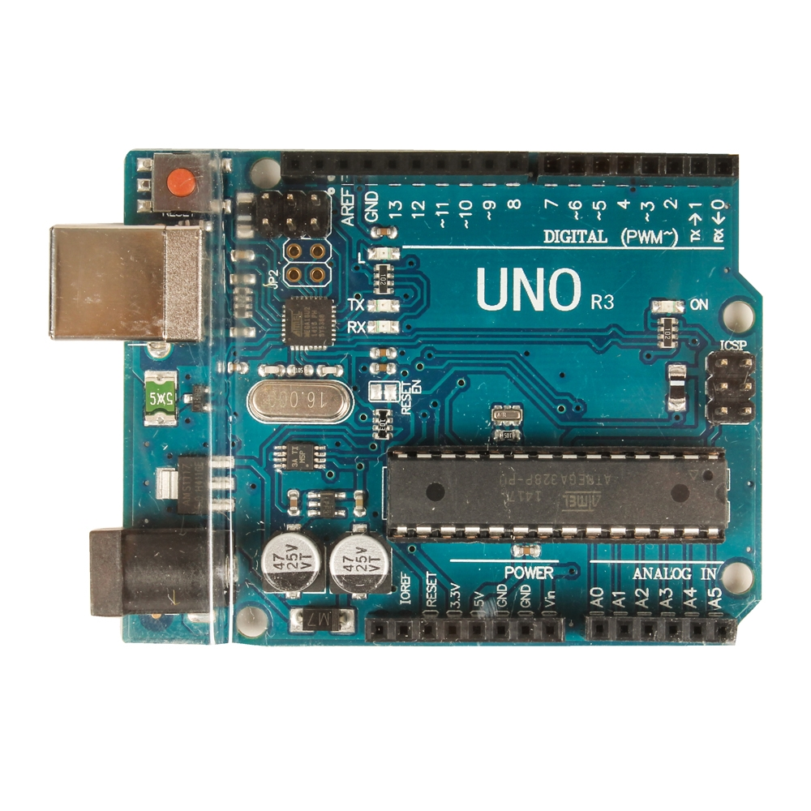
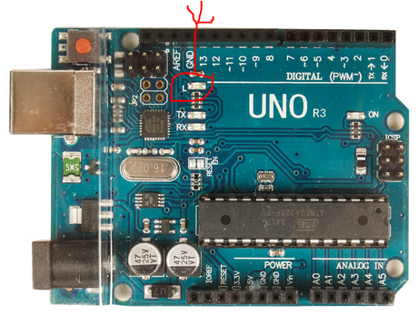

Arduino UNO R3
A microcontroller runs one program that is loaded into ROM.
When the power is cycled the same program will run again.
These instructions will show you how to create
and upload 'sketches' or programs onto an Arduino UNO microcontroller.
Microcontrollers are becoming common-controlling automobile engines and many other complex systems.
They automate tasks to save time. Examples.
They are going to provide substantial cost savings in automobiles, like Teslas, when used effectively.
In later assignments you will continue working with and experiencing the capabilities of the Arduino UNO.
After completing this assignment you will be able to:
- Obtain, modify or create a sketch
- Upload the sketch to the UNO
- Test and debug the sketch
- Upload a screen shot to D2L.
This assignment reviews basic computer concepts that you will need in this course and throughout your career.
For this assignment, you will install the Arduino IDE on a Windows computer.
Then you will learn to work with the Arduino IDE and upload sketches.
Later assignments will show you how to modify, create and debug these sketches.
You are expected to have a working knowledge of microcontroller hardware and software.
If you do not understand how to use an item, perform a Google Search,
refer to the WSU Technology Knowledge Base, ask a teaching assistant, or ask the instructor.
Once a sketch is verified and compiled, the next step is to transfer (upload) it to the Arduino UNO.
A microcontroller is designed to run one sketch at a time, and is simple to use.
Pi or Arduino?
- From the Arduino IDE choose File>Upload
After a few seconds the status bar will display the message
'Done uploading.'
The orange light will be blinking-on 1 second, off 1 second, until power is removed, or another sketch is uploaded.
 Blinking Light
Note: the green light at the right side of the UNO indicates power is applied to the board.
(70) 1. Use a web browser to login to D2L.
Upload your screenshot to the 'u01' D2L Assignment Folder.
Save the screen shot as "u01" in your '
Screenshot u01